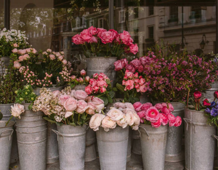
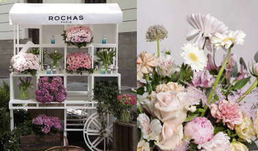
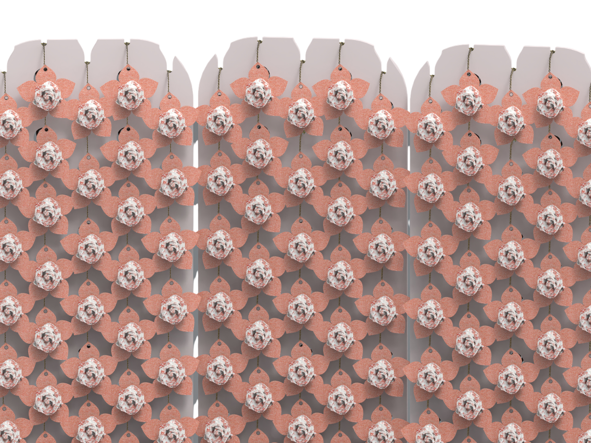

La Rose
Delicado como una rosa, este complemento es perfecto para decorar los bolsos con su elegancia. Adaptable a cualquier bolso y situación, este charm viene de un photocall para convención como regalo. Trabajo en grupo realizado en colaboración con Dior para presentar un regalo en la convención Dior Iberia 2025, donde el uso de materiales reciclados era clave.
Inspirándonos en los símbolos icónicos de Dior, como las rosas y las estrellas, y en la moda actual de charms, creamos una rosa de tela, con base de lona comercial y charms pequeños de metacrilato, reutilizando estos materiales. Las flores fueron cosidas a mano, con una costura en diagonal para abarcar el mayor área posible. 27 pétalos forman cada rosa, cada pétalo un rectángulo con sus bordes cosidos, luego cada pétalo cosido en triángulos y estos cosidos entre ellos para formar una tira contínua. Esta tira luego es enrollada poco a poco, cosiendo cada pétalo para dar una forma redonda y natural a la rosa.

